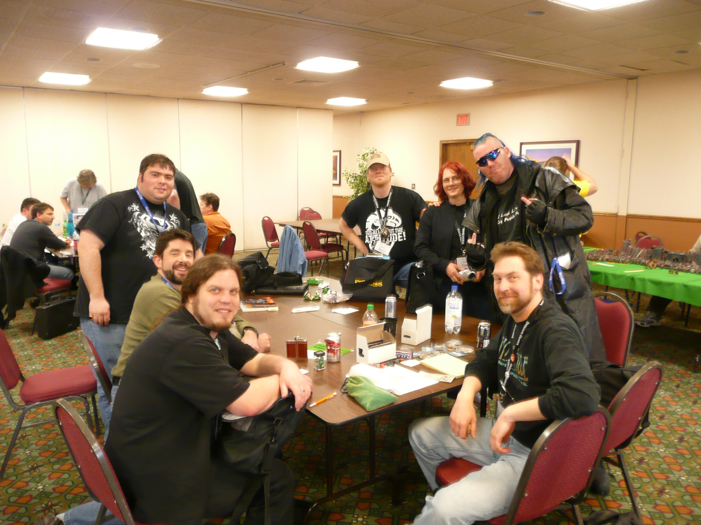
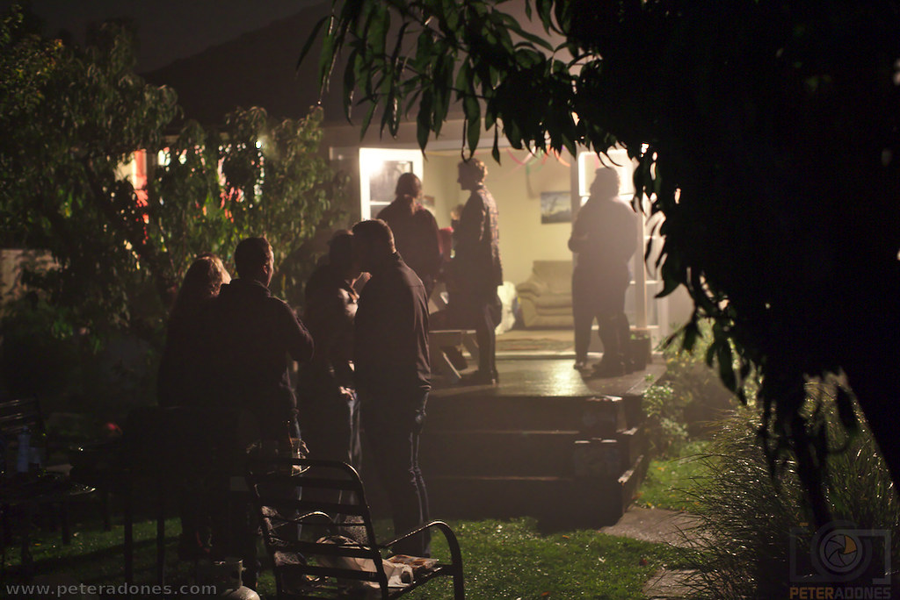
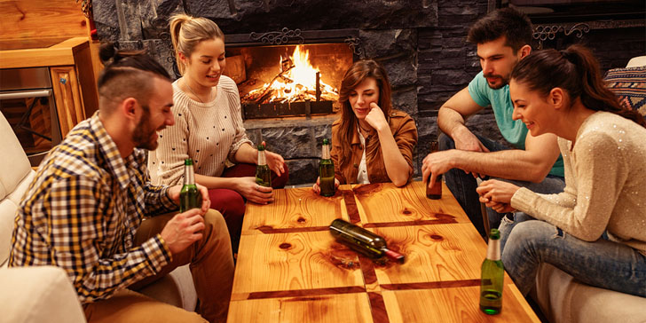
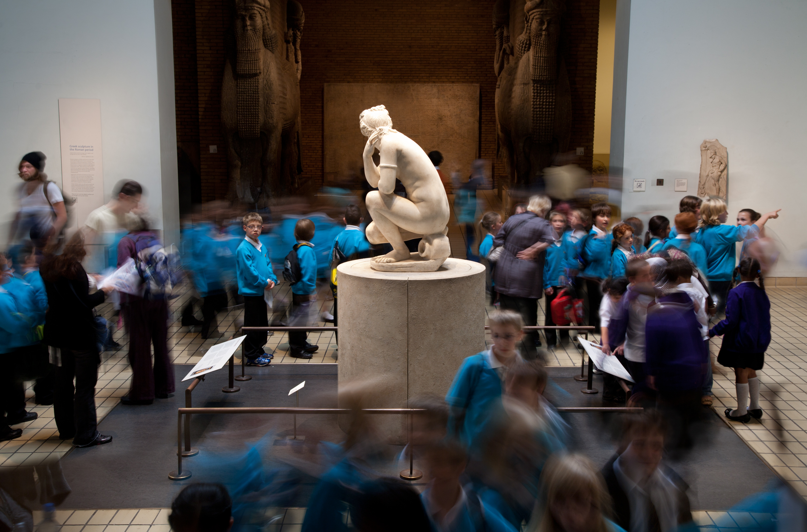
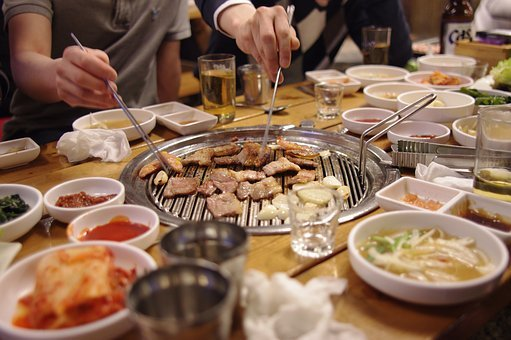
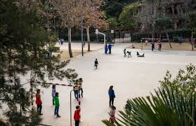
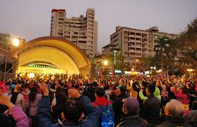
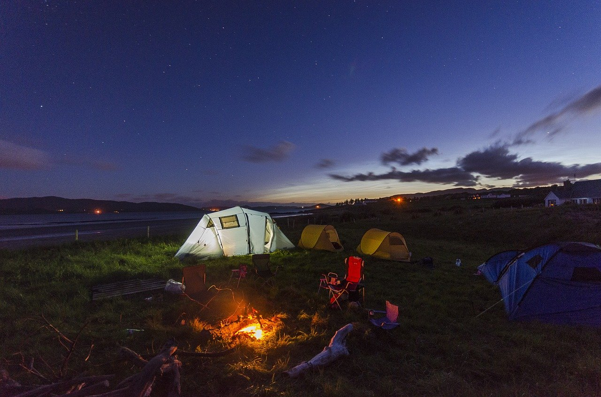

Vous voulez passer des bon moments avec vos amis?
Comment passer un bon moment avec vos amis ?
Rester à la maison et s'amuser
Avoir un marathon de films ou de séries
Choisissez des films ou des émissions de télévision que vous pensez parfaits à regarder avec vos amis. Trouvez un week-end gratuit et réunissez vos amis pour une séance de visionnage excessive.
Jouer à des jeux ensemble
Pour les adultes, les adolescents et les enfants, les jeux peuvent être très amusants. Jeux de cartes, jeux de société, jeux vidéo, déterminez ce qui fonctionne le mieux pour votre groupe.Les jeux vidéo multi-joueurs sont également parfaits pour jouer avec vos amis.

Faire une fête
Organisez une soirée dansante. Éteignez les lumières et dansez. Vous pouvez vous habiller de manière très élégante et apprendre quelques étapes de la salle de bal ou danser comme vous voulez.Personne ne vous arrêtera.

Jouez à Action ou Vérité (Truth or Dare)
C'est un jeu amusant et facile à jouer où vous voulez. Une «vérité» est une question à laquelle ils doivent répondre honnêtement. Un «défi» est une activité qu'ils doivent réaliser. Vous pouvez également autoriser un certain montant sur les «poulets» par personne, ce qui leur permet de ne pas compléter la vérité ou oser, mais ce ne sera pas amusant.

Faire une sortie
Visitez un musée local ou une galerie d'art avec vos amis.
Si vous êtes intéressé par les choses culturelles, vous pouvez consulter ensemble les dernières expositions. Les musées et les galeries d'art organisent également souvent des événements spéciaux tels que des conférences, des projections de films et des spectacles musicaux auxquels vous pourriez rejoindre avec vos amis.

Va au centre commercial.
Si vous avez besoin d'une nouvelle tenue ou si vous avez envie de magasiner, invitez un ou deux amis à vous rejoindre. Si vous ne voulez pas dépenser d’argent, faites du lèche-vitrine. Promenez-vous, regardez les présentoirs dans les vitrines, discutez et amusez-vous! Il y a aussi une arcade où vous pouvez jouer et gagner un cadeau pour vous-même. En dehors de cela, vous pouvez également aller aux restaurants après vous être promené dans le centre commercial.
Rassemblez-vous pour le déjeuner ou le dîner.
Vous pouvez sortir dans votre restaurant préféré ou manger sur place si vous êtes à court d'argent ou si vous ne voulez pas être en public. Cela vous donnera l'occasion de discuter avec vos amis pendant que vous mangez ou cuisinez. Dans tous les cas, assurez-vous que tout le monde peut le rejoindre. Assurez-vous donc de planifier à l'avance afin que personne ne manque le déjeuner ou le dîner.

Sortez dans votre café ou pub préféré.
Choisissez une heure chaque semaine ou chaque mois pour vous rencontrer. Essayez d'avoir tout le monde qui peut réussir et rattraper tout ce qui se passe dans votre vie. Le fait de l'avoir spécifiquement programmé signifie qu'un plus grand nombre de vos amis pourront le faire.
S'amuser dehors
Aller au parc ou champ ouvert.
Sortez avec vos amis et faites du sport, lancez un frisbee ou emmenez vos enfants sur le terrain de jeu. Le parc est un endroit idéal pour s'amuser gratuitement.Faire une course avec un ami dans le parc peut être un bon moyen de s'amuser avec des amis lorsque vous êtes très occupé. Alors planifiez votre emploi du temps et assurez-vous de ne pas trop tergiverser.

Allez à un festival ou à un concert en plein air.
De nombreuses villes proposent des concerts ou des films en plein air, des pièces de théâtre et des festivals. Consultez votre journal local pour les événements gratuits et à faible coût auxquels vous pouvez assister avec vos amis.Parfois, vous êtes autorisé à apporter votre propre nourriture et vos boissons à des concerts et des pièces de théâtre en plein air. Ce sera formidable pour vous aider à économiser de l'argent.

Planifiez un voyage de camping et faites un feu de joie.
Le camping est un excellent moyen de s'amuser entre amis et de renouer avec la nature. Vous n’avez pas besoin d’aller loin non plus. Vous pouvez aller camper dans un parc d'État voisin ou même dans votre propre jardin.Si vous décidez de faire du camping avec vos amis, assurez-vous simplement que chacun apporte ses propres fournitures.En le même temps vous pouvez vous amuser beaucoup à un feu de joie. Vous pouvez faire griller des guimauves, faire des s'mores, parler entre vous et même jouer à la vérité ou à oser.
